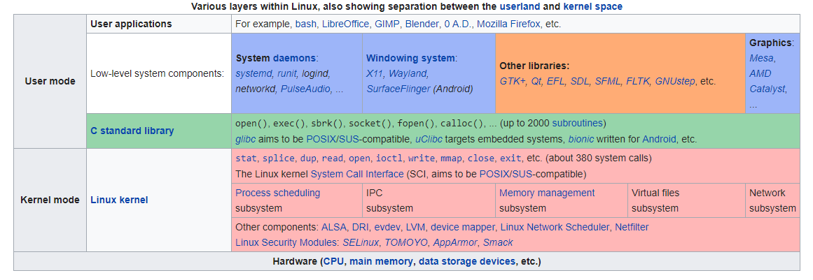

| Shop the Bargain Bin! Details |
| Offers |
| Free Shipping |
|

| 
|  ship to | 
Cart |  Account |
Linux was originally developed for personal computers based on the Intel x86 architecture, but has since been ported to more platforms than any other operating system. Because of the dominance of the Linux kernel-based Android OS on smartphones, Linux has the largest installed base of all general- purpose operating systems. Linux is also the leading operating system on servers and other big iron systems such as mainframe computers, and the only OS used on TOP500 supercomputers (since November 2017, having before gradually eliminated all competitors). It is used by around 2.3% of desktop computers. The Chromebook, which runs the Linux kernel-based Chrome OS, dominates the US K�12 education market and represents nearly 20% of the sub-$300 notebook sales in the US. Linux also runs on embedded systems�devices whose operating system is typically built into the firmware and is highly tailored to the system. This includes TiVo and similar DVR devices, network routers, facility automation controls, televisions, video game consoles and smartwatches. Many smartphones and tablet computers run Android and other Linux derivatives.
Linus Torvalds, principal author of the Linux kernel The Unix operating system was conceived and implemented in 1969, at AT&T's Bell Laboratories in the United States by Ken Thompson, Dennis Ritchie, Douglas McIlroy, and Joe Ossanna. First released in 1971, Unix was written entirely in assembly language, as was common practice at the time. Later, in a key pioneering approach in 1973, it was rewritten in the C programming language by Dennis Ritchie (with the exception of some hardware and I/O routines). The availability of a high-level language implementation of Unix made its porting to different computer platforms easier.
Due to an earlier antitrust case forbidding it from entering the computer business, AT&T was required to license the operating system's source code to anyone who asked. As a result, Unix grew quickly and became widely adopted by academic institutions and businesses. In 1984, AT&T divested itself of Bell Labs; freed of the legal obligation requiring free licensing, Bell Labs began selling Unix as a proprietary product, where users weren't legally allowed to modify Unix. The GNU Project, started in 1983 by Richard Stallman, had the goal of creating a "complete Unix-compatible software system" composed entirely of free software. Work began in 1984.[34] Later, in 1985, Stallman started the Free Software Foundation and wrote the GNU General Public License (GNU GPL) in 1989. By the early 1990s, many of the programs required in an operating system (such as libraries, compilers, text editors, a Unix shell, and a windowing system) were completed, although low-level elements such as device drivers, daemons, and the kernel, called GNU/Hurd, were stalled and incomplete.
Refusing to give up, he sees an old car, which he realizes certainly cannot be his mother. In desperation, the hatchling calls out to a boat and a plane (neither responds), and at last, climbs onto the teeth of an enormous power shovel. It belches "SNORT" from its exhaust stack, prompting the bird to cry, "You are not my mother! You are a Snort!" As the machine shudders and grinds into motion, he cannot escape. "I want my mother!" he shouts.
CreationIn 1991, while attending the University of Helsinki, Torvalds became curious about operating systems. Frustrated by the licensing of MINIX, which at the time limited it to educational use only, he began to work on his own operating system kernel, which eventually became the Linux kernel.
NamingLinus Torvalds had wanted to call his invention "Freax", a portmanteau of "free", "freak", and "x" (as an allusion to Unix). During the start of his work on the system, some of the project's makefiles included the name "Freax" for about half a year. Torvalds had already considered the name "Linux", but initially dismissed it as too egotistical.
Current developmentTorvalds continues to direct the development of the kernel. Stallman heads the Free Software Foundation, which in turn supports the GNU components. Finally, individuals and corporations develop third-party non-GNU components. These third-party components comprise a vast body of work and may include both kernel modules and user applications and libraries.
A Linux-based system is a modular Unix-like operating system, deriving much of its basic design from principles established in Unix during the 1970s and 1980s. Such a system uses a monolithic kernel, the Linux kernel, which handles process control, networking, access to the peripherals, and file systems. Device drivers are either integrated directly with the kernel, or added as modules that are loaded while the system is running.
The book's subjective appeal is derived from a compelling and compact plot full of humorous adventure, aided by line drawings that appeal to young children.
User interfaceThe user interface, also known as the shell, is either a command-line interface (CLI), a graphical user interface (GUI), or through controls attached to the associated hardware, which is common for embedded systems. For desktop systems, the default mode is usually a graphical user interface, although the CLI is commonly available through terminal emulator windows or on a separate virtual console.
CLI shells are text-based user interfaces, which use text for both input and output. The dominant shell used in Linux is the Bourne-Again Shell (bash), originally developed for the GNU project. Most low- level Linux components, including various parts of the userland, use the CLI exclusively. The CLI is particularly suited for automation of repetitive or delayed tasks, and provides very simple inter-process communication.
The primary difference between Linux and many other popular contemporary operating systems is that the Linux kernel and other components are free and open-source software. Linux is not the only such operating system, although it is by far the most widely used.[66] Some free and open-source software licenses are based on the principle of copyleft, a kind of reciprocity: any work derived from a copyleft piece of software must also be copyleft itself. The most common free software license, the GNU General Public License (GPL), is a form of copyleft, and is used for the Linux kernel and many of the components from the GNU Project.
CommunityA distribution is largely driven by its developer and user communities. Some vendors develop and fund their distributions on a volunteer basis, Debian being a well-known example. Others maintain a community version of their commercial distributions, as Red Hat does with Fedora, and SUSE does with openSUSE.
Programming on LinuxLinux distributions support dozens of programming languages. The original development tools used for building both Linux applications and operating system programs are found within the GNU toolchain, which includes the GNU Compiler Collection (GCC) and the GNU Build System. Amongst others, GCC provides compilers for Ada, C, C++, Go and Fortran. Many programming languages have a cross-platform reference implementation that supports Linux, for example PHP, Perl, Ruby, Python, Java, Go, Rust and Haskell. First released in 2003, the LLVM project provides an alternative cross-platform open-source compiler for many languages. Proprietary compilers for Linux include the Intel C++ Compiler, Sun Studio, and IBM XL C/C++ Compiler. BASIC in the form of Visual Basic is supported in such forms as Gambas, FreeBASIC, and XBasic, and in terms of terminal programming or QuickBASIC or Turbo BASIC programming in the form of QB64.
The Linux kernel is a widely ported operating system kernel, available for devices ranging from mobile phones to supercomputers; it runs on a highly diverse range of computer architectures, including the hand-held ARM-based iPAQ and the IBM mainframes System z9 or System z10. Specialized distributions and kernel forks exist for less mainstream architectures; for example, the ELKS kernel fork can run on Intel 8086 or Intel 80286 16-bit microprocessors, while the �Clinux kernel fork may run on systems without a memory management unit. The kernel also runs on architectures that were only ever intended to use a manufacturer-created operating system, such as Macintosh computers (with both PowerPC and Intel processors), PDAs, video game consoles, portable music players, and mobile phones.